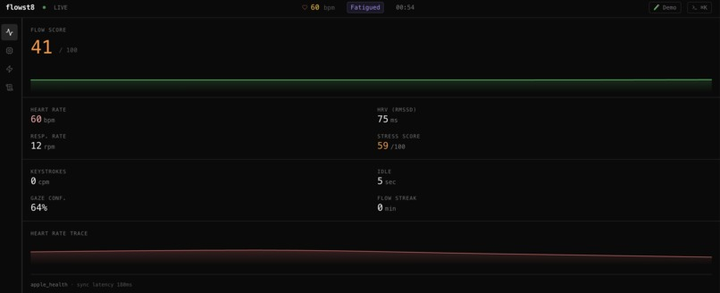
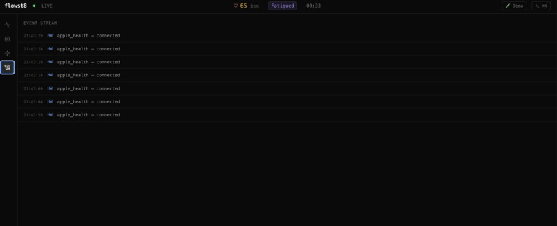
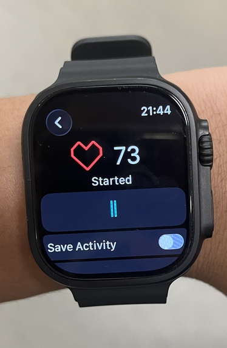
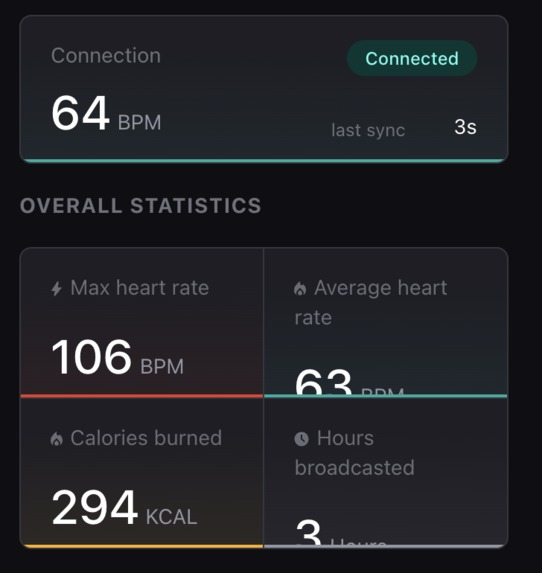
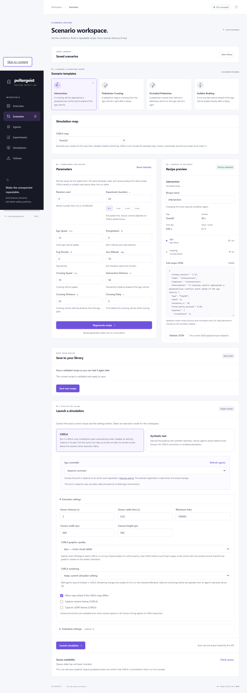
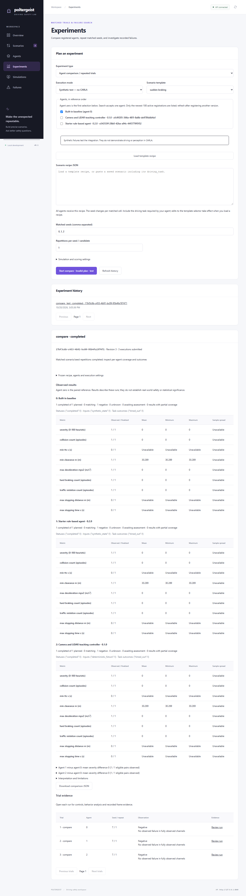
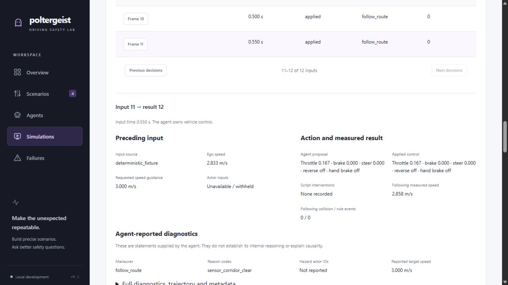
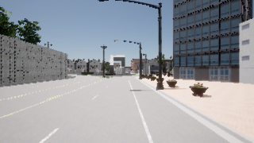

Away from the workbench
Royal Conservatory of Music Level 10 Piano with Honors.
Portfolio / Reading view
Electrical engineering at McGill University.
Circuits, code, and the systems they make together.
Montréal, QC · Expected 2030
My work spans circuits and code: designing circuit boards, connecting sensors, and building software that makes systems work together.
With McGill Formula Electric, I work on the race car's low-voltage electronics. My software projects include autonomous driving simulation, a real-time productivity application, and a UNIX shell built in C.
Royal Conservatory of Music Level 10 Piano with Honors.
Volunteered at McHacks 13 and McGill TechFair.
LFS101 certification from the Linux Foundation.
English, Mandarin, and French.
September 2026
Contributor · Team of three · Hack The Hill III
A real-time productivity application designed to calculate dynamic focus scores, detect developer fatigue, and prompt timely breaks.
I worked mainly on the backend and the connection between the frontend and backend, bringing separately developed components together into a usable application.
The hackathon deadline left little time for polish or repeated revision. We prioritized getting the wearable data, backend services, and interface working together as one end-to-end prototype.
A working prototype that brings heart-rate and keyboard activity into a live focus dashboard and alerts. The experience taught me how much practical debugging and coordination it takes to connect independently built parts.
Technologies Python · FastAPI · WebSockets · TypeScript · Next · Docker · TimescaleDB




Personal C programming exercise
A small Bash-like command interpreter written in C to practice command parsing, POSIX processes, and file descriptors.
I started Test-Shell as a short, self-directed project to test my C programming skills and understand what happens between entering a command and seeing a program run.
The aim was to explore a useful subset of shell behavior. It supports common built-ins, external commands, pipelines, and basic redirection, without attempting to reproduce all of Bash.
The project gave me a concrete way to work with child processes, pipes, file descriptors, argument parsing, and cleanup after each command. The emphasis was hands-on learning through a compact implementation.
Technologies C · POSIX · UNIX · Process management
Autonomous driving simulation & evaluation
A CARLA-based platform for creating hazardous driving scenarios, evaluating autonomous agents, and reviewing telemetry, sensor recordings, and failure evidence.
I started Poltergeist with the goal of pitching a repeatable stress-testing platform to autonomous driving companies and smaller startups. The idea is to give different models a common set of challenging conditions and make their responses easier to compare.
The biggest engineering challenge was understanding CARLA's vehicle motion and translating it into meaningful dashboard values. That meant connecting position, speed, and timing data to braking, stopping, clearance, and time-to-collision calculations, while keeping units and unavailable measurements explicit.
The current local workflow brings scenario setup, agent execution, recorded evidence, and behavior review together. It gives a team a repeatable starting point for investigating failures and comparing model versions under controlled conditions.
Technologies Python · FastAPI · React · TypeScript · CARLA · SQLite · Pydantic




September 2025 – Present
Electronic Systems Team Member · Montréal, QC
Expected 2030
Bachelor of Engineering, Electrical Engineering
Montréal, QC
2025
Ontario Secondary School Diploma
GPA: 97.5% · Honour Roll, Grades 9–12 · Richmond Hill, ON
Based in Montréal, QC. Find my work, get in touch, or download the complete résumé.